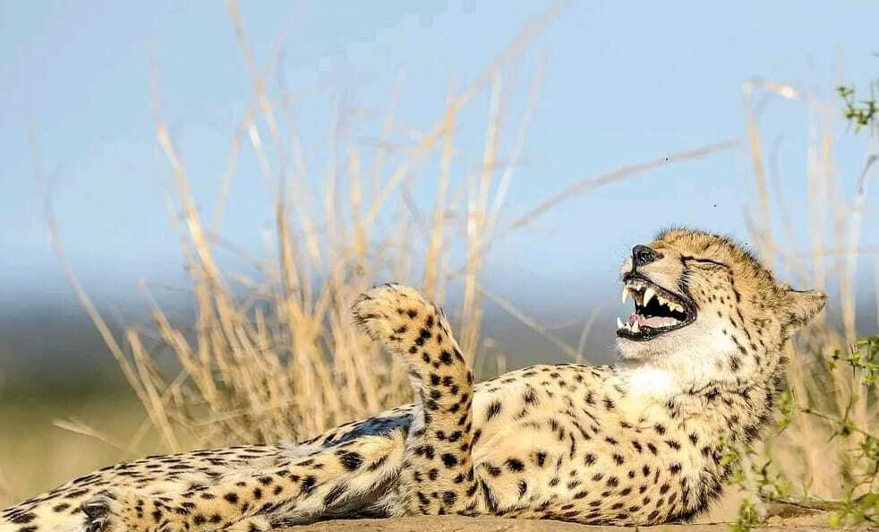
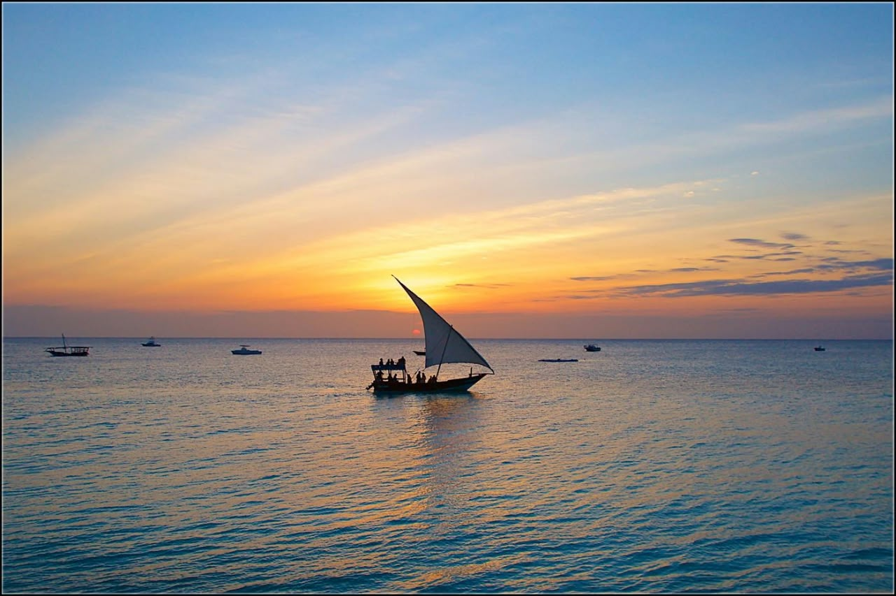
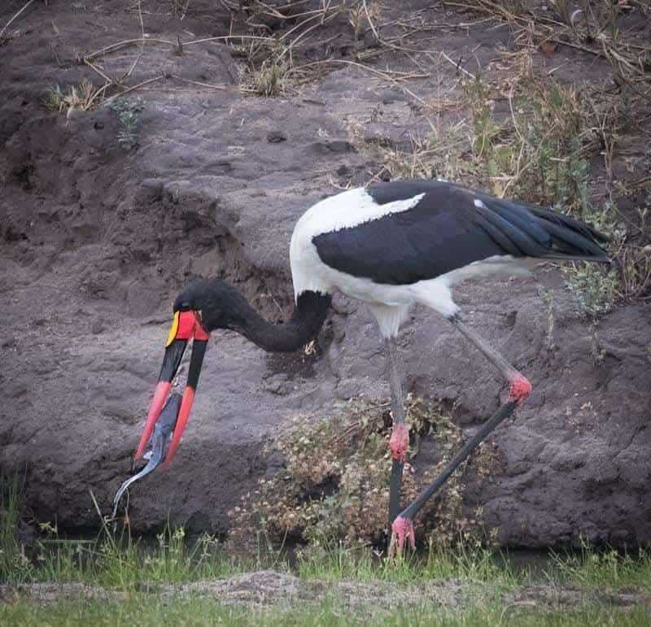

Northern Circuit Classic
6 days, 5 nights
The classic loop: elephants and baobabs in Tarangire, two nights on the Serengeti plains, the Ngorongoro Crater and a finish at Lake Manyara.
- Arusha
- Tarangire
- Karatu
- Serengeti
- Ngorongoro
- Lake Manyara
Midrange and luxury: price on request.
Great Migration Safari
7 days, 6 nights
Three nights in the Serengeti so we can move to wherever the herds are, then the Ngorongoro Crater on the way out.
- Arusha
- Lake Manyara
- Karatu
- Serengeti
- Ngorongoro
Midrange and luxury: price on request.

Safari and Zanzibar Beach
9 days, 8 nights
Five days of game drives, then a short flight to Zanzibar for beach days and Stone Town.
- Arusha
- Tarangire
- Karatu
- Serengeti
- Ngorongoro
- Zanzibar
Midrange and luxury: price on request.

Tarangire, Manyara and Ngorongoro
4 days, 3 nights
A short safari with three parks and no long drives to the Serengeti.
- Arusha
- Tarangire
- Lake Manyara
- Karatu
- Ngorongoro
Midrange and luxury: price on request.
Packages and routes are examples. Prices are shared in your quote and depend on season and group size.
Want something different?
Every trip can be shortened, extended or rebuilt. Tell us what matters most and we design it from scratch.
Plan a custom safariSafari questions, answered
What is the best time to go on safari in Tanzania?
The dry months, June to October, are the easiest for wildlife viewing. The Great Migration moves through the year: calving in the south from January to March, the Western Corridor around May and June, and the north from July to October. Tell us what you want to see and we match your dates.
What kinds of accommodation are available?
Midrange and luxury lodges, tented camps and camping. Every itinerary page lets you switch between midrange and luxury stays.
Are safaris suitable for children?
Yes. We plan family safaris with shorter drives and child-friendly lodges. Some camps have minimum ages, which we check for you.
What should I pack?
Light neutral clothing, a warm layer for early mornings, a hat, sunscreen, insect repellent, binoculars, a camera and a soft bag. We send a full list after booking.
Do I need a visa?
Most visitors do. Apply through the official Tanzania immigration website before you travel, and check the rules for your passport.
How does tipping work?
Tipping guides and camp staff is customary. We explain what is usual for your group size before you travel.
Do I need vaccinations or insurance?
Ask your doctor about vaccinations and malaria prevention, and check whether a yellow fever certificate applies to your route. We recommend travel insurance that covers medical care and evacuation.
Can I customise my itinerary?
Yes. Every package is a starting point. Choose a tour, then tell us what to change.
How do I book?
Send us your dates, group size and interests using the contact form or by email. We reply with a proposed itinerary and a quote, and share our cancellation terms with it.